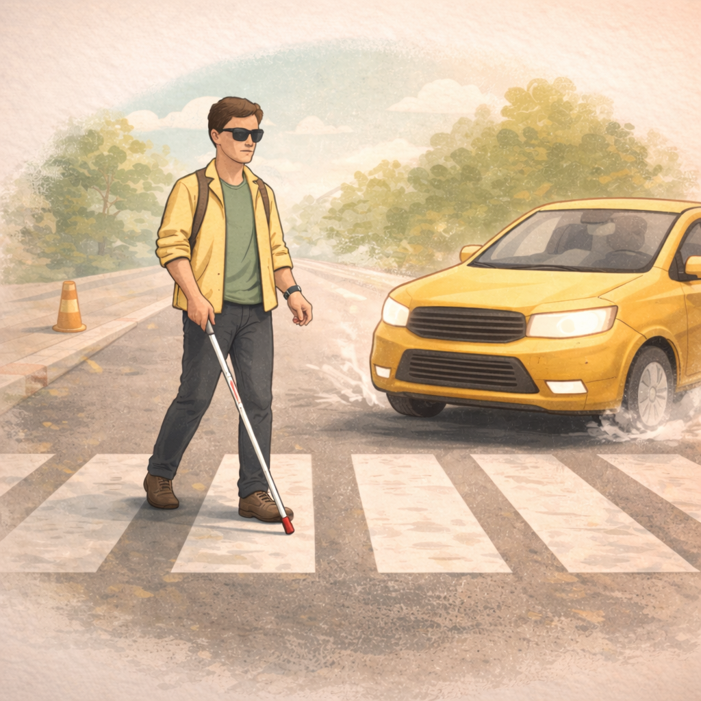

Problem
Blind pedestrians often receive hazard awareness too late.
- Most assistive tools (cane, guide dog) detect obstacles only when they are very close.
- Many dangers are spatial: path edges/curbs, terrain changes/slopes, and approaching cyclists or vehicles.
- Traditional vision systems focus on object detection, not navigation reasoning.
- Result: important walking hazards are often recognized too late.
